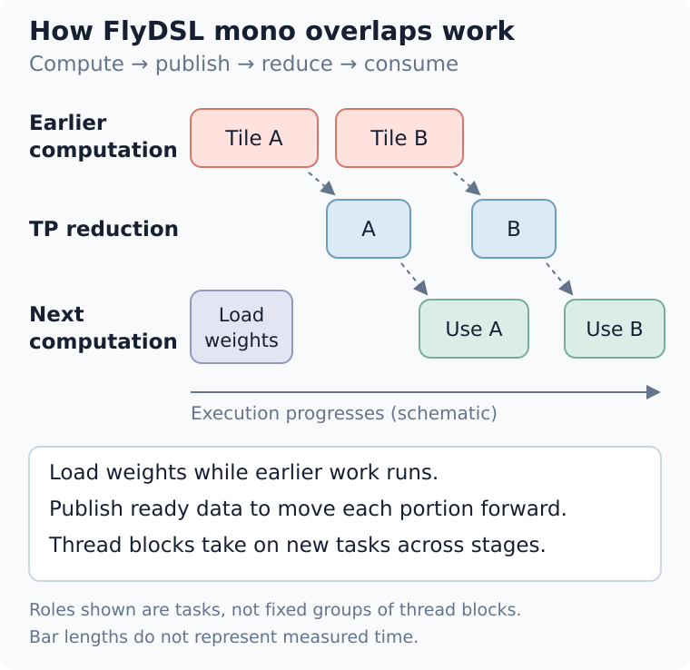
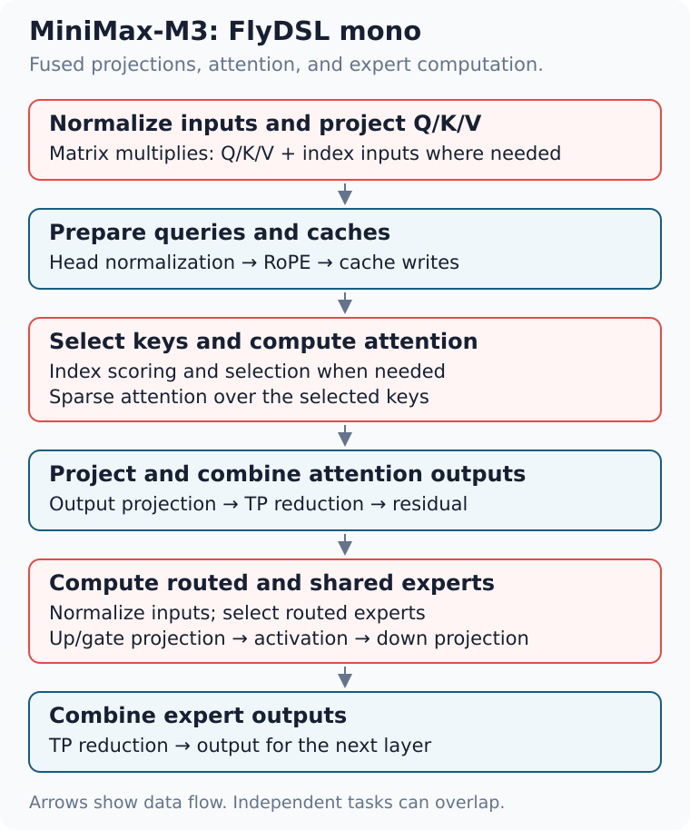
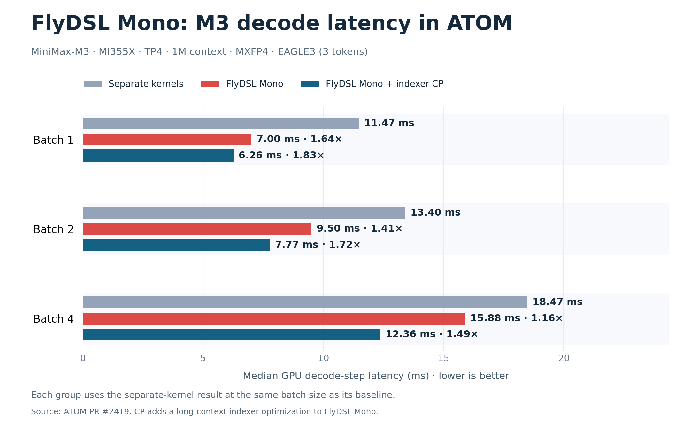
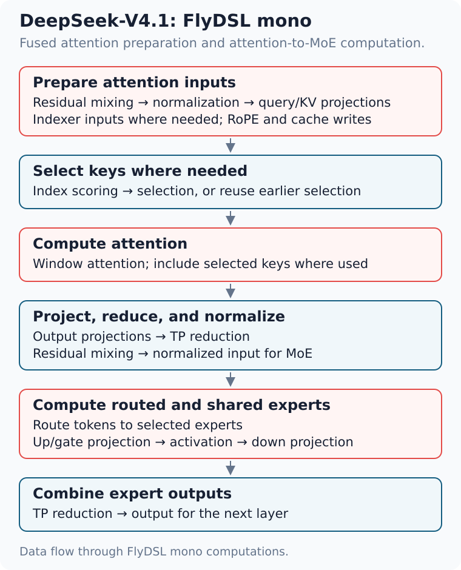
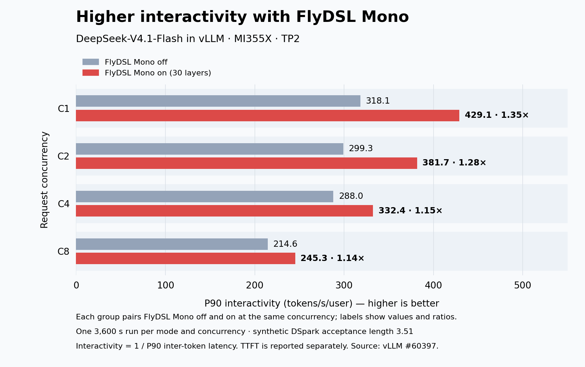
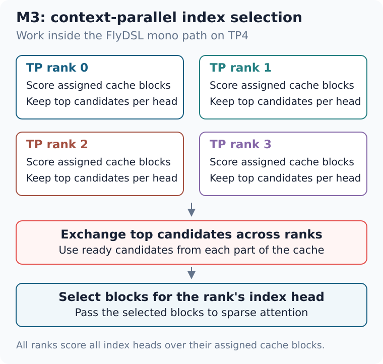
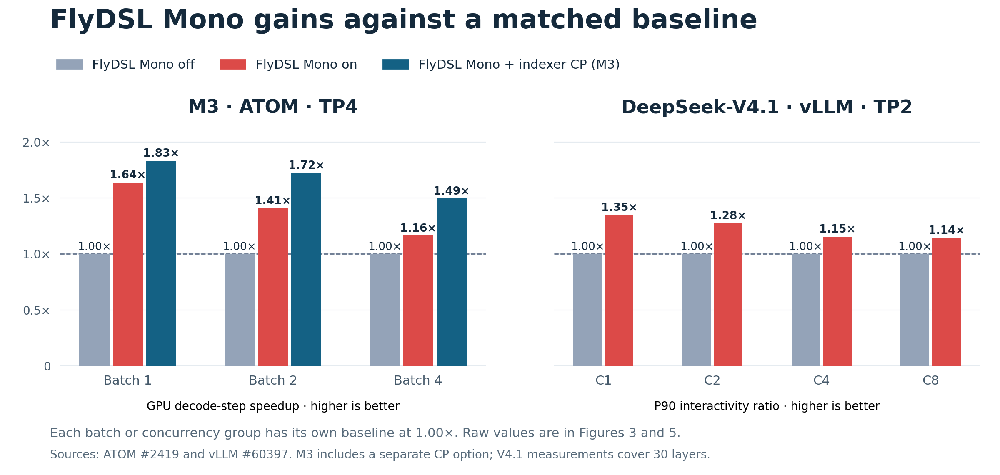

用于 ATOM 高交互式 LLM 服务的 FlyDSL 单体内核
有严格延迟要求的 LLM 应用需要很高的交互性。例如，编程智能体必须快速生成下一步动作，才能调用工具并继续任务。降低解码延迟可以让这一循环持续快速运转。
FlyDSL 允许开发者使用 Python 编写 GPU 程序，并在 grid、block、wave、thread 和指令层级进行调优。它的即时编译（JIT）按需构建专用内核，无需预先编译所有变体。开发者可以控制工作分配、数据布局、数据移动和同步，把模型层的多个阶段组合成 FlyDSL 单体内核（mono kernel），重叠相互独立的工作并减少等待。ATOM 已将这些内核用于多个模型家族的在线服务，这种方法也扩展到了 vLLM 和 SGLang。
本文将介绍 FlyDSL 单体调度如何跨模型阶段重叠工作、服务运行时如何集成分派和回退机制，以及如何理解解码延迟和交互性测量结果。ATOM 示例以及 vLLM、SGLang 集成展示了这种方法的适用场景，也说明了收益可能缩小的情况。
FlyDSL 单体内核为何能加速解码
小批量解码需要运行许多短内核，每次只处理少量 token。每次 launch 都会引入开销，而且部分内核没有足够多的并行工作来充分利用 GPU。GPU stream 按顺序执行这些内核，因此即使某一部分输入已经准备好，下一阶段仍必须等待整个内核完成。
FlyDSL 单体内核把相关操作合并为更少的 launch，并允许 thread block 跨阶段工作。开发者可以在前一阶段计算时提前加载后续权重，并让下一阶段在部分输出就绪时立即处理。计算还可以与跨 GPU 归约重叠。这些选择共同减少空闲时间，使解码步骤更快完成。[2, 3]
HIP Graph 重放能减少 CPU 提交开销，但 GPU 仍会按顺序执行相互依赖的内核。FlyDSL 单体内核还会改变单次 launch 内部各阶段共享数据和重叠工作的方式。
FlyDSL 提供的能力
FlyDSL 提供构建单体调度所需的控制能力和编译支持：[1]
- JIT 专用化。 按需编译专用内核并复用缓存版本。开发者可以调整形状和调度，无需重新构建庞大的预编译内核库，因此更容易调优并扩展到新模型。
- 工作分配。 把任务分给 thread block 和 thread，并针对每一步不同的 token 数量调整映射。
- 布局与分块。 选择每个阶段的数据排列方式以及 tile 划分方式。
- 数据移动与同步。 决定何时加载数据，以及如何在单张 GPU 内或多张 GPU 之间发出输出就绪信号。
- 底层控制。 在 grid、block、wave 和 thread 层级编写与调优各种操作，并可控制到单条 GPU 指令。[1, 2]
这些能力让开发者既能调整每个阶段内部的工作，也能调整阶段之间的交接方式。在 FlyDSL 单体内核中，随着模型层逐步执行，thread block 可以持续保持活跃：一个 block 交出已就绪的结果后，可以继续承担另一个任务。图 1 展示了这种交接，以及权重预取和归约与计算重叠的过程。[1, 2]

开发者负责设计融合方式，选择调度与同步方案，并确保 GPU 上常驻足够多的协作 thread block，使内核能够持续推进。ATOM 则提供服务集成，包括运行时 buffer、张量并行（TP）rank 协调、Graph 重放、正确性检查和回退路径。[2, 4]
该设计受到 TileRT 的启发。[5]
将 FlyDSL 单体内核引入 ATOM
ATOM 已为 GLM-5.2、Kimi-K3、DeepSeek-V4.1 和 MiniMax-M3 支持 FlyDSL 单体解码。其共享的 FlyDSL 组件提供 buffer、同步和归约能力，各模型的专用调度可以复用这些组件。[2, 4, 6]
每个模型提供连接自身阶段的调度。ATOM 再把该调度接入服务系统；在服务中，批处理和推测解码可能改变每一步的 token 数量。运行时必须选择支持当前形状的路径，并确保每个 TP rank 作出相同选择。[4, 6]
M3 与 V4.1 展示了这些共享控制能力如何支持不同的模型设计。
MiniMax-M3：连接注意力与专家计算
在 MiniMax-M3 的稀疏层中，FlyDSL 单体内核把输入归一化、注意力、混合专家（MoE）计算一路连接到最终 TP 归约，如图 2 所示。融合路径包含主要矩阵乘法：Q/K/V 和索引器投影、注意力输出投影、路由，以及共享专家与路由专家的上投影、门控投影和下投影。它还处理 head normalization、旋转位置编码（RoPE）和缓存写入。[2]

三种调度选择可以减少等待：[2]
- 跨阶段复用 thread block。 完成注意力工作的 block 可以继续承担路由或专家任务，让调度随着模型层推进持续复用 GPU 资源。
- 提前加载权重。 在前一阶段计算时，block 可以开始加载后一阶段权重。实际计算仍需等待输入，但权重加载已经提前进行。
- 传递已就绪的数据。 带标签的 buffer 会发出输出就绪信号。后续阶段和跨 GPU 归约可以立即处理所需部分，同时其他 block 继续产生剩余输出。
解码延迟。 M3 测试使用 MI355X、TP4、MiniMax-M3-MXFP4、100 万 token 上下文，以及带三个草稿 token 的 EAGLE3。“Separate”和“FlyDSL Mono”对比测试版本中的完整 ATOM 执行路径。“FlyDSL Mono + CP”进一步加入索引器上下文并行，这是一种在附录中介绍的独立长上下文优化。[7]
图 3 对比不同 batch size 下的解码步骤。时间为 GPU 解码步骤延迟中位数，单位为毫秒；括号中是相对 Separate 路径的加速比。
| Batch | Separate | FlyDSL Mono | FlyDSL Mono + CP |
|---|---|---|---|
| 1 | 11.47 | 7.00（1.64×） | 6.26（1.83×） |
| 2 | 13.40 | 9.50（1.41×） | 7.77（1.72×） |
| 4 | 18.47 | 15.88（1.16×） | 12.36（1.49×） |

batch size 为 1 时，仅 FlyDSL Mono 就能获得 1.64× 加速，加入 CP 后达到 1.83×。随着 batch 增大，收益逐渐缩小。更大的 batch 为独立内核提供更多并行工作，并把 launch 开销分摊到更多 token 上，因此会降低 FlyDSL Mono 的相对优势。
这些数据测量的是 GPU 解码步骤，没有测量单用户 token 速率，也没有单独分离每一种调度选择的贡献。原文提供了按照该测试版本配置启动 ATOM 服务的示例。
ATOM 中的 DeepSeek-V4.1
DeepSeek-V4.1 将 FlyDSL 单体内核用于注意力准备阶段以及注意力到 MoE 的路径，如图 4 所示：[4]
- 准备注意力输入。 把残差更新和归一化与查询、KV 投影、RoPE、窗口缓存写入合并，并在需要的位置加入索引器投影。
- 连接注意力和 MoE。 必要时对键打分并选择，计算注意力和输出投影，再跨 TP rank 归约结果并对 MoE 输入归一化。路由、共享与路由专家投影以及专家归约均融合到这条路径中。
当每个归一化后的数据行准备好时，调度会立即把它交给路由器和专家阶段。输出投影权重的加载在内核等待注意力输出之前便开始，使内存访问能与早期计算重叠。在适用的步骤中，GPU 还会在某些阶段划分 token 行，从而减少每张 GPU 重复执行的工作。FlyDSL 让开发者控制何时加载、何时等待以及如何分配工作。[4]

DSpark 草稿运行器也会复用这些 FlyDSL 内核，并针对草稿计算调整注意力和专家设置。[4]
ATOM 的交互性结果
InferenceX AgentX 基准会重放多轮、长上下文智能体会话。它收集每个请求的 token 间延迟，并把 P90 交互性定义为 1 / P90 token 间延迟，延迟单位为秒。数值越高，表示请求分布较慢一端的 token 等待时间越短。[8]
以下已发布的 ATOM 结果使用 MI355X，并在并发度 1（C1）时启用 FlyDSL 单体解码。数据源没有提供关闭 FlyDSL Mono 的匹配基线，因此这些结果描述的是完整服务配置，不能单独代表启用 FlyDSL Mono 的收益。
- MiniMax-M3-MXFP4、TP4： EAGLE3，三个草稿 token，合成平均接受长度 2.78，使用 FP8 KV 与索引缓存。
- DeepSeek-V4.1-Flash、TP2 和 TP4： DSpark，五个草稿 token，合成平均接受长度 3.51，使用 BF16 KV 和 FP4 索引缓存。
接受长度是每个验证步骤平均产生的输出 token 数，包括目标 token。这些测试人为设置接受率，因此正常服务中的实际接受率可能不同。两种模型配置都使用 GPU 驻留 KV 缓存和 3,600 秒 profiling 窗口。ATOM 服务数据链接到精确配置、容器镜像、接受率设置和原始结果。
下表中的 P90 交互性单位为 token/s/user，输出吞吐量单位为生成 token/s/GPU，P90 首 token 时间（TTFT）单位为秒。输出吞吐量在整个 profiling 窗口上取平均值；交互性描述请求开始生成后 token 之间的速度。
| 模型 / TP | 交互性 | 输出速率 | TTFT |
|---|---|---|---|
| M3 / TP4 | 469.5 | 42.5 | 1.13 |
| V4.1 / TP2 | 505.1 | 86.5 | 1.20 |
| V4.1 / TP4 | 641.0 | 45.5 | 1.20 |
对 C1 下的 M3，输入与输出合计吞吐量为 6,580 token/s/GPU，但生成输出只占 42.5 token/s/GPU。较大的总数主要由输入 token（包括缓存命中的输入）贡献，不能代表生成速度。前面的 M3 GPU 步骤对比测量启用 FlyDSL Mono 的影响，而服务结果还受到调度、缓存和推测解码影响。TTFT 和工具等待时间同样会影响用户体验。
扩展到 vLLM 与 SGLang
vLLM 把 FlyDSL 单体内核集成到解码路径，并适配自身 KV 缓存布局和运行时。针对 MI355X 上的 DeepSeek-V4.1-Flash，已发布的同节点 FlyDSL Mono 关闭/开启对比采用 TP2；开启时在 30 个标准层中启用融合。并发度为 1 时，P90 交互性从 318.1 提升到 429.1 token/s/user，即 1.35×。每个并发度、每种模式各运行一次 3,600 秒测试，使用 DSpark、五个草稿 token 和合成接受长度 3.51。四种并发度同时运行在同一个八 GPU 节点上。图 5 对比各并发度下关闭与开启 FlyDSL Mono 时的 P90 交互性。[3]

这些测试中，C1/C8 的 TTFT 较高，C2/C4 较低。要确认变化能否稳定复现，还需要更多测试；附录列出了四组完整对比。与 ATOM 基准一样，接受率是人为设定的，因此不能代表自然接受率下的完整用户体验。
SGLang 的 GPU kernel framework RFC [9] 已在 SGLang #44353 中实现，通过 GPU 厂商插件（包括 AMD 插件）为 FlyDSL 单体内核提供扩展点。插件提供模型内核，SGLang 负责步骤选择和运行时集成。
适用范围与成本
融合可能增加寄存器和共享内存占用，从而减少可同时运行的 thread block 数量。开发者决定组合哪些操作时必须考虑这一限制。[2]
收益缩小的场景。 M3 的 GPU 步骤加速比从 batch 1 的 1.64× 降到 batch 4 的 1.16×；vLLM 的交互性增益从 C1 的 1.35× 降到 C8 的 1.14×。一个独立的 vLLM 仅 FFN 层测试在 TP2/C8、48 行 token 时已经接近持平：345 → 342 µs（1.01×）。现有完整模型测量尚未确定 FlyDSL Mono 与独立内核路径在何处完全持平。[3, 7]
何时采用 FlyDSL Mono。 运行时根据模型、GPU、TP 大小、数据布局和步骤元数据选择 FlyDSL Mono。在引用版本中，M3 每步最多支持 16 行 token；ATOM 和 vLLM 的 V4.1 最多支持 48 行。推测 token 和 Graph padding 都计入限制：一个带五个草稿 token 的请求在 padding 前便可能使用六行。受支持的部署中，更大或不受支持的步骤会使用标准路径，而且所有 TP rank 必须作出相同选择。这些行数限制描述的是支持的形状，并不表示 FlyDSL Mono 从哪个点开始失去性能收益。[2, 3, 4]
开发成本。 每个模型都需要专用调度，开发者必须随着模型变化持续验证和维护；正确性检查和任务评测也是工作的一部分。[3]
为你的模型构建 FlyDSL 单体路径
从 FlyDSL 单体组件和 ATOM 的共享框架开始：
- 找出等待点。 在实际服务 batch size 下分析独立内核路径，确定各阶段等待数据或通信的位置。
- 使用 FlyDSL 编写调度。 使用可复用的计算与通信组件连接各阶段，把相互独立的任务分给不同 thread block，使它们能够重叠。
- 集成并评测。 加入运行时分派、回退和正确性检查。使用真实拒绝采样评测任务质量，再在相同并发度下比较交互性、TTFT 和吞吐量。
附录：补充测量
M3 的索引器上下文并行。 如图 6 所示，ATOM 将索引打分拆分到四个 TP rank，再交换候选项以完成最终选择。这就是 FlyDSL Mono + CP 结果中增加的独立优化。[2, 7]
在 100 万 token 上下文、TP4、16 行 token、每请求四行查询时，层级测量结果从 222.2 µs 降至 156.7 µs，即使用 CP 获得 1.42× 加速。两次测试均使用 FlyDSL Mono 和 Graph 重放。[7]

FlyDSL Mono 直接对比。 图 7 汇总图 3 与图 5 中的成对结果。每组均包含自身关闭 FlyDSL Mono 的基线，并归一化为 1.00×。M3 使用 ATOM GPU 步骤延迟，V4.1 使用 vLLM 交互性。[3, 7]

vLLM 评测细节
下表给出图 5 中 TP2、关闭/开启 FlyDSL Mono 测试的 P90 TTFT，单位为秒。每种并发度、每种模式仅有一次 3,600 秒运行，需要重复测量才能确定变化是否稳定。[3]
| 并发度 | FlyDSL Mono 关闭 | FlyDSL Mono 开启 |
|---|---|---|
| 1 | 1.18 | 1.28 |
| 2 | 1.10 | 1.08 |
| 4 | 1.27 | 1.26 |
| 8 | 1.01 | 1.08 |
额外的 vLLM 对比 CSV 记录 TP2 下 C1、C2、C4、C8 的关闭/开启结果，包括 TTFT。CSV 保留了输入与输出总量，其中包含缓存输入，不能视为输出吞吐量。[3]
总结
本文介绍了 FlyDSL 单体内核如何缩短小批量解码时间。短内核让 GPU 等待 launch；即使部分输入已就绪，下一阶段仍需等待整个内核完成。FlyDSL 单体内核让 thread block 跨阶段持续工作：提前加载后续权重、传递已就绪的输出，并让计算与归约重叠。
ATOM 已把这种方法用于 GLM-5.2、Kimi-K3、DeepSeek-V4.1 和 MiniMax-M3。在 MI355X 上，MiniMax-M3 的 batch 1 延迟从独立内核的 11.47 ms 降至 FlyDSL Mono 的 7.00 ms（1.64×），加入索引器上下文并行后进一步降至 6.26 ms（1.83×）。随着 batch 增大，相对收益会缩小。vLLM 中的 DeepSeek-V4.1-Flash 呈现相同趋势：并发度为 1 时，P90 交互性从 318.1 提升到 429.1 token/s/user（1.35×），更高并发下收益较小。ATOM AgentX 表格描述的是启用 FlyDSL Mono 的完整服务配置，没有匹配的关闭基线。
vLLM 将同一组内核适配到自身 KV 缓存布局，SGLang 则通过 GPU 厂商插件调用它们。若要为其他模型构建类似路径，应先分析独立调度中的等待点，再用 FlyDSL 编排重叠执行，并为融合内核不支持的形状保留回退路径。
参考资料
- FlyDSL 语言与编译器
- ATOM 的 M3 FlyDSL 单体实现
- vLLM：DeepSeek-V4.1-Flash FlyDSL 单体解码与 AgentX 结果
- ATOM 的 DeepSeek-V4.1 FlyDSL 单体实现
- TileRT
- ATOM：GLM-5.2 与 Kimi-K3 FlyDSL 单体解码
- ATOM：MiniMax-M3 FlyDSL 单体解码与测量
- InferenceX AgentX 指标定义
- SGLang：GPU kernel framework RFC
免责声明
AMD 于 2026 年 10 月 15 日完成测试。硬件配置：Supermicro AS-4126GS-NMR-LCC，配备 8 张 AMD Instinct™ MI355X（gfx950，每张 288 GB HBM3E）、2 颗 AMD EPYC™ 9575F 64 核处理器、3 TiB 系统内存；Ubuntu 22.04.5 LTS（Linux kernel 6.8.0-65），amdgpu 驱动 6.14.14。MiniMax-M3 测试使用 MiniMax-M3-MXFP4、TP4、100 万 token 上下文和带三个草稿 token 的 EAGLE3；解码步骤延迟为中位数。vLLM 的 DeepSeek-V4.1-Flash 测试使用 TP2，每种模式、每种并发度各运行一次 3,600 秒测试。软件版本与参考资料中的链接一致。ATOM AgentX 表格展示已发布的 InferenceX 结果（结果日期 2026-10-08，参见源文件），并非在上述配置上测得。
第三方内容由其所有者直接向你授权，不由 AMD 授权。所有链接的第三方内容均按“原样”提供，不附带任何形式的保证。使用第三方内容完全由你自行决定，AMD 在任何情况下均不对第三方内容承担责任。你须自行承担使用这些内容可能造成的风险与损失。
本文结果来自特定测试配置，可能随工作负载、模型和系统配置而变化。文中信息仅供参考，可能包含技术错误、遗漏或排版错误，也可能因产品、路线图、软硬件版本等变化而失效。AMD 没有义务更新或修正这些信息。信息按“原样”提供，AMD 不对其准确性、适销性、特定用途适用性或不侵权作任何明示或暗示保证，也不对使用这些信息所造成的直接、间接、特殊或后果性损失承担责任。AMD、AMD Arrow、AMD Instinct、AMD EPYC、AMD ROCm 及其组合是 Advanced Micro Devices, Inc. 的商标；其他名称可能属于各自所有者。© 2026 Advanced Micro Devices, Inc. 保留所有权利。
本文为中文翻译，技术参数和测试结论以英文原文为准。